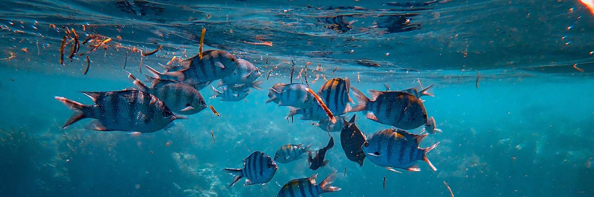

La vita sott’acqua: perché va preservata? 9 comportamenti che puoi seguire anche tu.

Aver cura dell’oceano non è importante solo per la vita sottomarina, ma lo è anche per la nostra sopravvivenza. Ecco quindi i motivi per prendersene cura, e dei suggerimenti su cosa puoi fare anche tu nella vita di tutti i giorni.
1. Perché è importante la vita sott’acqua?
1.1 La produzione di ossigeno
1.2 Il clima della Terra
1.3 L’assorbimento di CO2
2. Cosa mette in pericolo la vita sott’acqua?
2.1 Plastica negli oceani
2.2 Acidificazione delle acque
2.3 Pesca intensiva
3. 9 comportamenti che puoi seguire per salvaguardare l’oceano.